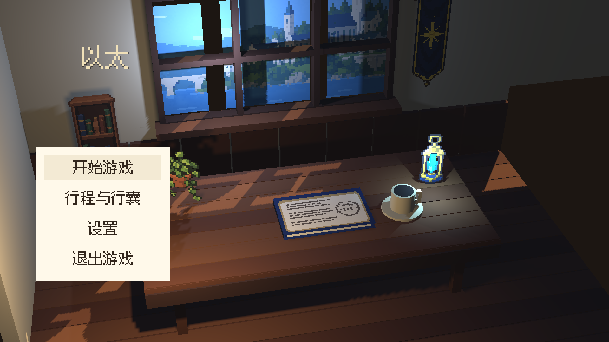
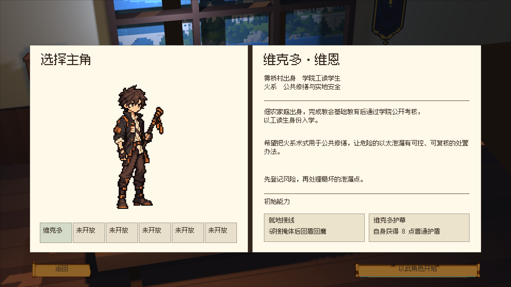
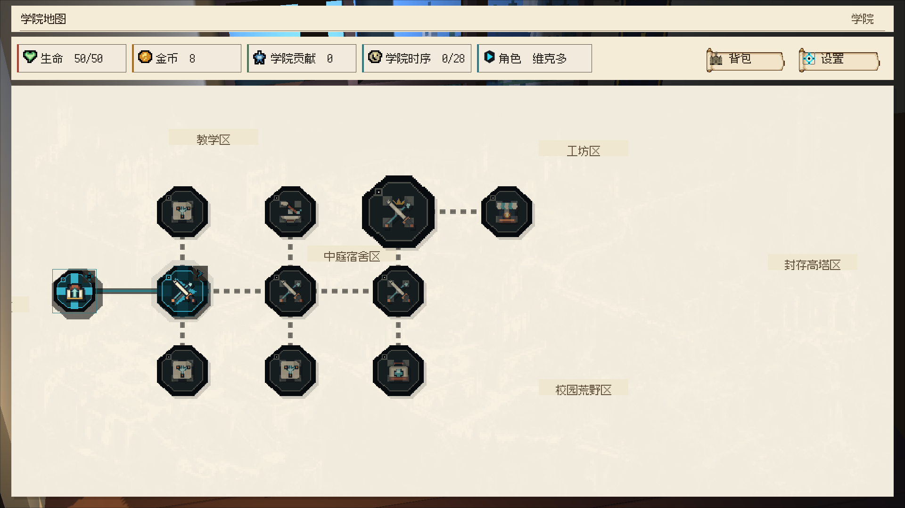
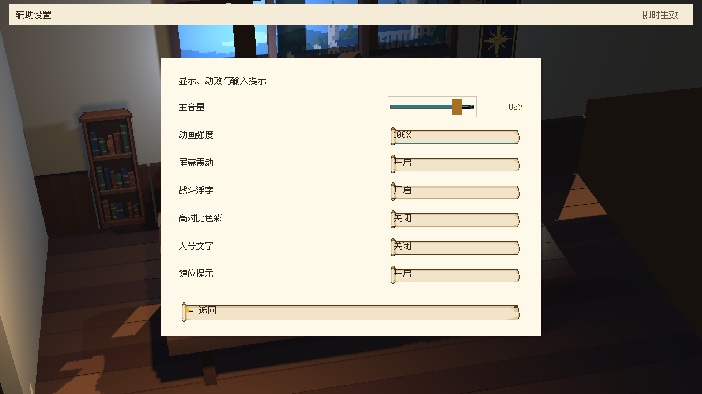
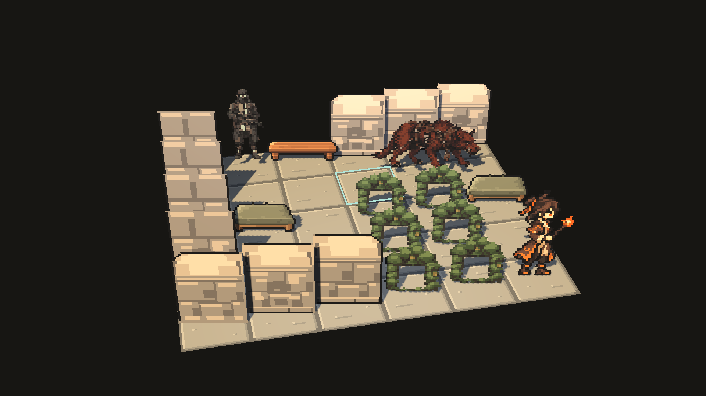

UNITY 实机 · 俯视微缩场景HD-2D 全项目方向 · 第一批样板
主菜单已校正为固定俯视斜角与长焦弱透视，开书时保持相机朝向。角色档案、地图与设置现在共享同一套立体书桌背景。
真实点击开始游戏：菜单淡出、固定书脊开书、镜头推进、进入角色档案。相机样板为本工程选定的35°俯角、12°水平偏角与24°纵向视野。
主菜单 · 校正后的视角

角色档案

学院地图与设置


战斗 · 投影与选格样板

从正常入口进入学院战斗后，读取真实6×5战局制作独立空间样板。原生像素地面铺在水平面，角色与物件为直立面片；30格投影往返检查通过，真实输入点击选中(3,3)。尚未接替正式战斗入口，暂不提交移动或攻击；墙体仍使用旧像素面片，立体墙模块、血条、范围、意图与动作反馈待迁移。
| 范围 | 当前状态 |
|---|
| 开场主菜单 | 俯视斜角与开书衔接已验证；正式材质细节待制作。 |
| 全部战斗外页面 | 共用HD-2D书桌背景已接入；档案、地图、设置已实机验证，其他页面待逐页审阅。 |
| 学院地图 | 现有路线与节点内容保留，场景背景已迁移；立体学院内容待制作。 |
| 战斗 | 真实素材的独立投影、光照与选格样板已验证，完整战斗表现和输入迁移待完成。 |
全项目HD-2D已确定为制作目标。本批交付的是相机与共用场景、战斗投影样板；全盘正式美术与流程迁移尚未完成。原生源资产不重采样，字体、背包占格和既定玩法保留。
《歧路旅人Ⅱ》官方画面参考 · 上一版视角